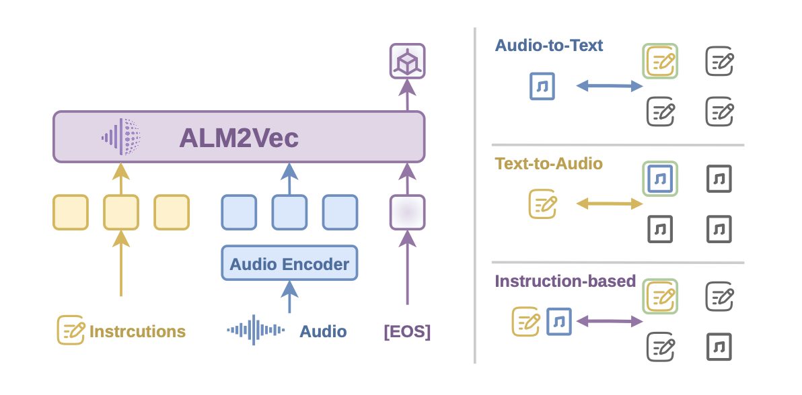
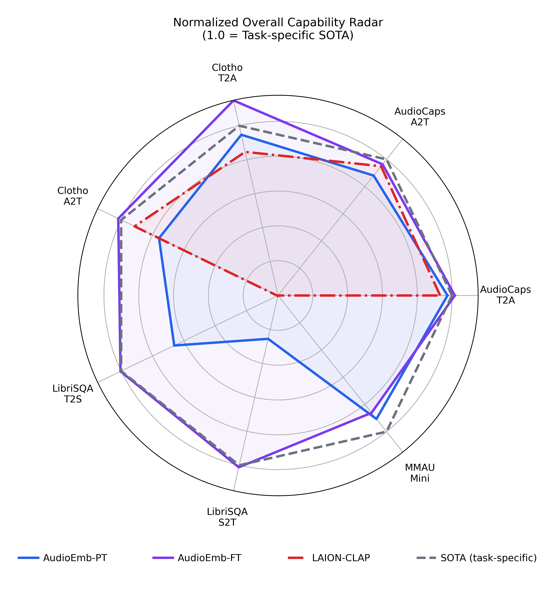

ALM2Vec: Learning Audio Embeddings for Universal Audio Retrieval with Large Audio-Language Models


TL;DR
Existing contrastive audio–text embeddings are tuned mainly for caption matching, which limits support for diverse retrieval goals and controllable behavior. ALM2Vec transfers the audio understanding and instruction-following abilities of pretrained large audio–language models (LALMs) into a unified embedding space for retrieval across domains and tasks—including instruction-aware search for audio QA and aspect-conditioned retrieval. On standard audio and speech retrieval benchmarks it is competitive, while also showing promising compositional and controllable retrieval capabilities as a unified model across domains, tasks, and user intents.


Demo
We showcase ALM2Vec across four retrieval settings. Scroll to browse each part, or use the navigation bar to jump directly; each part contains several illustrative examples.
instruction-aware audio → audio
The same audios are encoded in query mode under different instructions. Because each embedding follows its instruction, the resulting similarities reflect instruction following — the same audio pair lands closer or farther apart depending on what the instruction asks the model to attend to.
audio → text retrieval
Each example contains three audio–text pairs. The 3×3 matrix reports the pairwise similarity between every audio and every text, with the diagonal (matching pairs) expected to dominate.
text → audio retrieval
Symmetric to audio→text: three text–audio pairs and the 3×3 pairwise similarity matrix between every text and every audio.
audio + question → answer
An audio clip paired with a question forms the query. Several candidate answers act as independent documents; the query×doc similarities (a 1×N row) should peak on the correct answer.
License
The repository is licensed under CC BY-NC 4.0 (Creative Commons Attribution-NonCommercial 4.0 International).
Citation
If you find this work useful, please consider contributing to this repo and citing:
@misc{lu2026alm2veclearningaudioembeddings,
title={ALM2Vec: Learning Audio Embeddings for Universal Audio Retrieval with Large Audio-Language Models},
author={Fengjie Lu and Chenang Jiang and Jiarui Hai and Helin Wang and Aaron Yee},
year={2026},
eprint={2606.30682},
archivePrefix={arXiv},
primaryClass={cs.SD},
url={https://arxiv.org/abs/2606.30682},
}